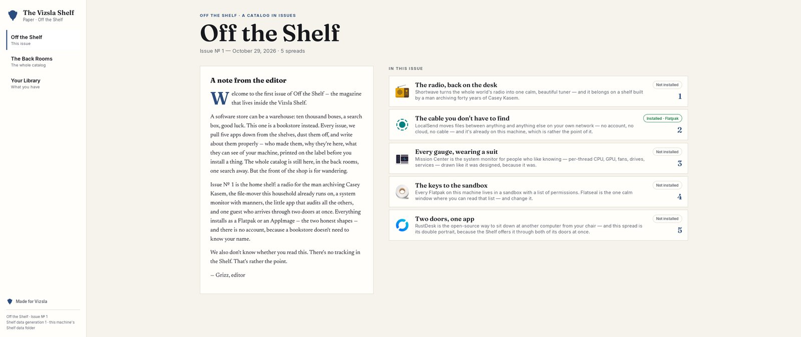
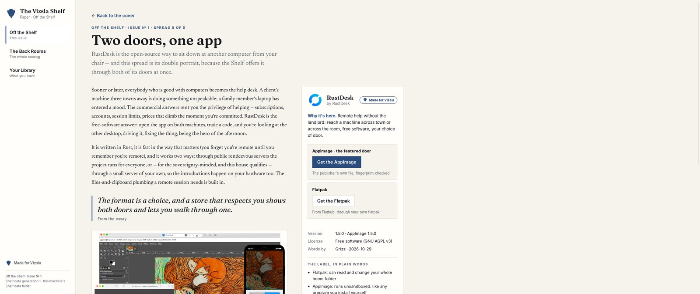
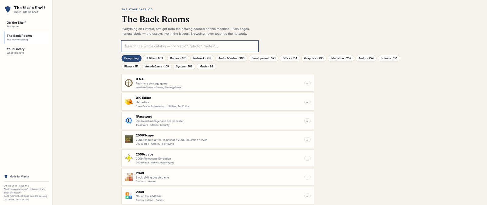

The Vizsla Shelf
A store that reads like a magazine.
App stores are mostly the same everywhere you look: paid promotions and unrelated ads, millions of apps nobody vetted, clutter stacked on clutter. Vizsla OS is completely different — and so is its store.
You may never need it
Every version of Vizsla OS comes preloaded with all the apps most people will ever want or need — chosen on purpose, installed, and ready before you sit down. (See what’s inside.) For most people, on most days, the store is a room they never have to enter. That is rather the point of it.

For everyone who wanders
But some of you will want to explore what else is out there that Vizsla didn’t curate. For that, we built the Shelf: a digital magazine that focuses on a handful of apps at a time, with a visual, narrative layout like a paper magazine. Every issue pulls a few apps down from the shelves, dusts them off, and writes about them properly — who made them, why they’re here, and what they can see of your machine, printed on the label before you install a thing.
It’s calm. It asks for nothing. You can completely ignore it or linger on the pages. You can also review the back issues at any time.
No account, either. And no tracking — the Shelf doesn’t know whether you read it, and doesn’t want to.
Issue № 1 — the home shelf
Published October 29, 2026. Five spreads, each written like a magazine piece — an essay, a maker’s card, and the plain-words label:
Shortwave
The radio, back on the desk. The whole world’s radio in one calm, beautiful tuner. By Felix Häcker.
LocalSend
The cable you don’t have to find. Files between anything and anything else on your own network — no account, no cloud, no cable. By Tien Do Nam and contributors.
Mission Center
Every gauge, wearing a suit. The system monitor for people who like knowing — every dial drawn properly.
Flatseal
The keys to the sandbox. Every app lives in a sandbox with a list of permissions; Flatseal is the one calm window where you read that list — and change it.
RustDesk
Two doors, one app. The open-source way to sit down at another computer from your chair — offered as both a Flatpak and an AppImage, with the difference printed on the label.

The back rooms, and your library
The magazine is the front of the shop; the whole store is still here. Behind it sit the Back Rooms — the full catalog of thousands of apps, one search away, read from catalog data stored on your own machine, so browsing never touches the network. And a third room, Your Library, keeps what you already have: everything installed, and where it came from, in plain words.

One more rule, kept everywhere in the Shelf: it never updates anything behind your back. Checking is allowed. Surprising you isn’t.
The difference, in one breath: no paid promotions, no unrelated ads, no account, no clutter — a handful of apps at a time, written about like they matter, in a store you can ignore completely. Most days you won’t open it. That’s what success looks like.